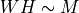
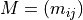

Note
Click here to download the full example code or to run this example in your browser via Binder
Custom Operator for NMF Decomposition¶
NMF factorizes an input matrix into two matrices W, H of rank k so that .  may be a binary matrix where i is a user and j a product he bought. The prediction function depends on whether or not the user needs a recommandation for an existing user or a new user. This example addresses the first case.
The second case is more complex as it theoretically requires the estimation of a new matrix W with a gradient descent.
Building a simple model¶
import os
import skl2onnx
import sklearn
from sklearn.decomposition import NMF
import numpy as np
import matplotlib.pyplot as plt
from onnx.tools.net_drawer import GetPydotGraph, GetOpNodeProducer
import onnx
from skl2onnx.algebra.onnx_ops import (
OnnxArrayFeatureExtractor, OnnxMul, OnnxReduceSum)
from skl2onnx.common.data_types import FloatTensorType
from onnxruntime import InferenceSession, __version__ as ort_version
mat = np.array([[1, 0, 0, 0], [1, 0, 0, 0], [1, 0, 0, 0],
[1, 0, 0, 0], [1, 0, 0, 0]], dtype=np.float64)
mat[:mat.shape[1], :] += np.identity(mat.shape[1])
mod = NMF(n_components=2)
W = mod.fit_transform(mat)
H = mod.components_
pred = mod.inverse_transform(W)
print("original predictions")
exp = []
for i in range(mat.shape[0]):
for j in range(mat.shape[1]):
exp.append((i, j, pred[i, j]))
print(exp)
Out:
original predictions
[(0, 0, 1.8940267184935033), (0, 1, 0.10917445465120829), (0, 2, 0.30724964808202293), (0, 3, 0.30724964808202293), (1, 0, 1.0146841053708857), (1, 1, 0.984872326560832), (1, 2, 0.0), (1, 3, 0.0), (2, 0, 1.1066284500880117), (2, 1, 0.0), (2, 2, 0.19085159684386513), (2, 3, 0.19085159684386513), (3, 0, 1.1066284500880117), (3, 1, 0.0), (3, 2, 0.19085159684386513), (3, 3, 0.19085159684386513), (4, 0, 0.9470133592467517), (4, 1, 0.05458722732560414), (4, 2, 0.15362482404101147), (4, 3, 0.15362482404101147)]
Let’s rewrite the prediction in a way it is closer to the function we need to convert into ONNX.
Out:
[(0, 0, 1.8940267184935033), (0, 1, 0.10917445465120829), (0, 2, 0.30724964808202293), (0, 3, 0.30724964808202293), (1, 0, 1.0146841053708857), (1, 1, 0.984872326560832), (1, 2, 0.0), (1, 3, 0.0), (2, 0, 1.1066284500880117), (2, 1, 0.0), (2, 2, 0.19085159684386513), (2, 3, 0.19085159684386513), (3, 0, 1.1066284500880117), (3, 1, 0.0), (3, 2, 0.19085159684386513), (3, 3, 0.19085159684386513), (4, 0, 0.9470133592467517), (4, 1, 0.05458722732560414), (4, 2, 0.15362482404101147), (4, 3, 0.15362482404101147)]
Conversion into ONNX¶
There is no implemented converter for NMF as the function we plan to convert is not transformer or a predictor. The following converter does not need to be registered, it just creates an ONNX graph equivalent to function predict implemented above.
def nmf_to_onnx(W, H, op_version=12):
"""
The function converts a NMF described by matrices
*W*, *H* (*WH* approximate training data *M*).
into a function which takes two indices *(i, j)*
and returns the predictions for it. It assumes
these indices applies on the training data.
"""
col = OnnxArrayFeatureExtractor(H, 'col')
row = OnnxArrayFeatureExtractor(W.T, 'row')
dot = OnnxMul(col, row, op_version=op_version)
res = OnnxReduceSum(dot, output_names="rec", op_version=op_version)
indices_type = np.array([0], dtype=np.int64)
onx = res.to_onnx(inputs={'col': indices_type,
'row': indices_type},
outputs=[('rec', FloatTensorType((None, 1)))],
target_opset=op_version)
return onx
model_onnx = nmf_to_onnx(W.astype(np.float32),
H.astype(np.float32))
print(model_onnx)
Out:
ir_version: 6
producer_name: "skl2onnx"
producer_version: "1.7.1"
domain: "ai.onnx"
model_version: 0
graph {
node {
input: "Ar_ArrayFeatureExtractorcst"
input: "col"
output: "Ar_Z0"
name: "Ar_ArrayFeatureExtractor"
op_type: "ArrayFeatureExtractor"
domain: "ai.onnx.ml"
}
node {
input: "Ar_ArrayFeatureExtractorcst1"
input: "row"
output: "Ar_Z01"
name: "Ar_ArrayFeatureExtractor1"
op_type: "ArrayFeatureExtractor"
domain: "ai.onnx.ml"
}
node {
input: "Ar_Z0"
input: "Ar_Z01"
output: "Mu_C0"
name: "Mu_Mul"
op_type: "Mul"
domain: ""
}
node {
input: "Mu_C0"
output: "rec"
name: "Re_ReduceSum"
op_type: "ReduceSum"
domain: ""
}
name: "OnnxReduceSum"
initializer {
dims: 2
dims: 4
data_type: 1
float_data: 1.6056125164031982
float_data: 0.0
float_data: 0.2769075036048889
float_data: 0.2769075036048889
float_data: 0.6877604722976685
float_data: 0.6675538420677185
float_data: 0.0
float_data: 0.0
name: "Ar_ArrayFeatureExtractorcst"
}
initializer {
dims: 2
dims: 5
data_type: 1
float_data: 1.1095750331878662
float_data: 0.0
float_data: 0.6892251372337341
float_data: 0.6892251372337341
float_data: 0.5547875165939331
float_data: 0.16354404389858246
float_data: 1.4753451347351074
float_data: 0.0
float_data: 0.0
float_data: 0.08177202194929123
name: "Ar_ArrayFeatureExtractorcst1"
}
input {
name: "col"
type {
tensor_type {
elem_type: 7
shape {
dim {
}
}
}
}
}
input {
name: "row"
type {
tensor_type {
elem_type: 7
shape {
dim {
}
}
}
}
}
output {
name: "rec"
type {
tensor_type {
elem_type: 1
shape {
dim {
}
dim {
dim_value: 1
}
}
}
}
}
}
opset_import {
domain: ""
version: 11
}
opset_import {
domain: "ai.onnx.ml"
version: 1
}
Let’s compute prediction with it.
sess = InferenceSession(model_onnx.SerializeToString())
def predict_onnx(sess, row_indices, col_indices):
res = sess.run(None,
{'col': col_indices,
'row': row_indices})
return res
onnx_preds = []
for i in range(mat.shape[0]):
for j in range(mat.shape[1]):
row_indices = np.array([i], dtype=np.int64)
col_indices = np.array([j], dtype=np.int64)
pred = predict_onnx(sess, row_indices, col_indices)[0]
onnx_preds.append((i, j, pred[0, 0]))
print(onnx_preds)
Out:
[(0, 0, 1.8940266), (0, 1, 0.10917445), (0, 2, 0.30724967), (0, 3, 0.30724967), (1, 0, 1.0146841), (1, 1, 0.98487234), (1, 2, 0.0), (1, 3, 0.0), (2, 0, 1.1066285), (2, 1, 0.0), (2, 2, 0.19085161), (2, 3, 0.19085161), (3, 0, 1.1066285), (3, 1, 0.0), (3, 2, 0.19085161), (3, 3, 0.19085161), (4, 0, 0.9470133), (4, 1, 0.054587226), (4, 2, 0.15362483), (4, 3, 0.15362483)]
The ONNX graph looks like the following.
pydot_graph = GetPydotGraph(
model_onnx.graph, name=model_onnx.graph.name,
rankdir="TB", node_producer=GetOpNodeProducer("docstring"))
pydot_graph.write_dot("graph_nmf.dot")
os.system('dot -O -Tpng graph_nmf.dot')
image = plt.imread("graph_nmf.dot.png")
plt.imshow(image)
plt.axis('off')

Out:
(-0.5, 1276.5, 846.5, -0.5)
Versions used for this example
print("numpy:", np.__version__)
print("scikit-learn:", sklearn.__version__)
print("onnx: ", onnx.__version__)
print("onnxruntime: ", ort_version)
print("skl2onnx: ", skl2onnx.__version__)
Out:
numpy: 1.19.1
scikit-learn: 0.23.2
onnx: 1.7.0
onnxruntime: 1.4.0
skl2onnx: 1.7.1
Total running time of the script: ( 0 minutes 0.355 seconds)